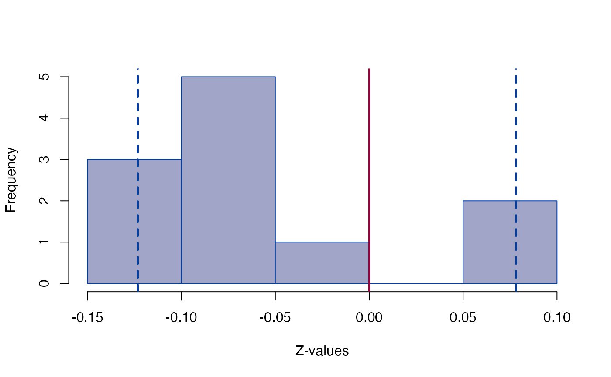
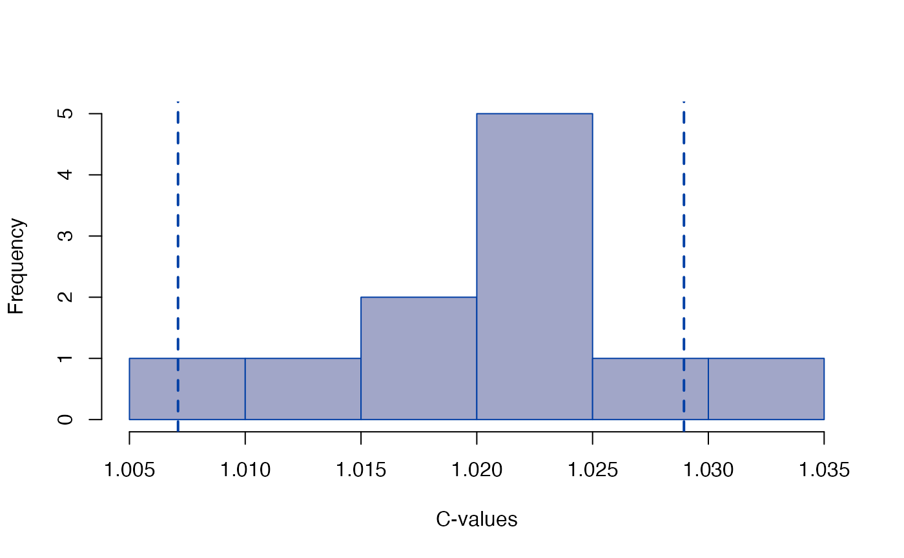
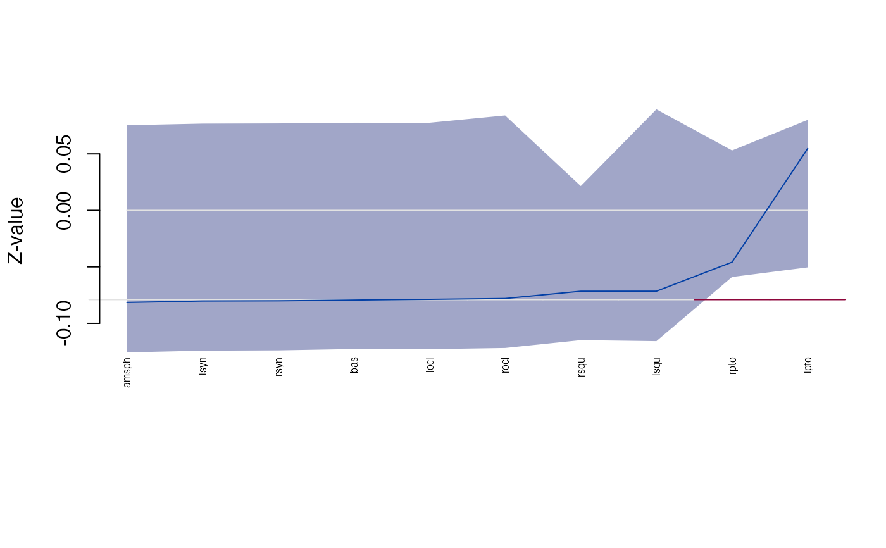
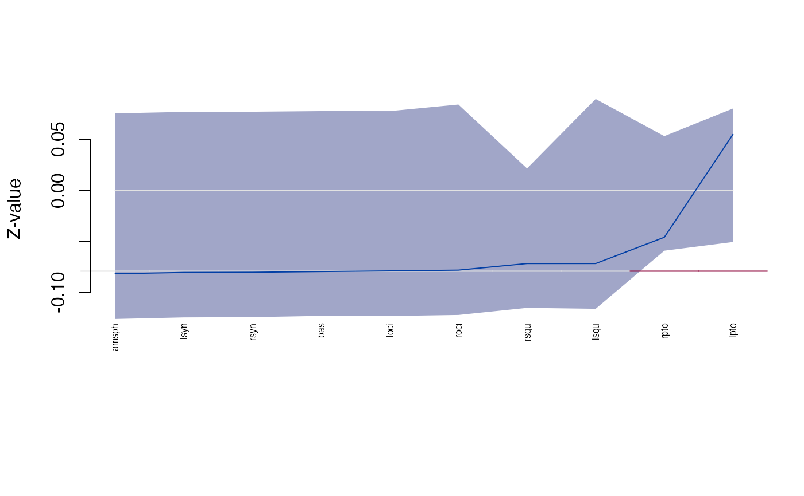

Shape difference
edma_sdm.RdShape difference matrix based inference following Lele and Cole (1996).
Usage
edma_sdm(a, b, log=TRUE, size=TRUE, edge = NULL)
get_sdm(object, ...)
# S3 method for edma_sdm
get_sdm(object, sort=FALSE,
level = 0.95, ...)
# S3 method for edma_sdm
print(x, level = 0.95, ...)
Z_test(object, ...)
# S3 method for edma_sdm
Z_test(object, level = 0.95, ...)
# S3 method for edma_sdm
landmarks(x, ...)
# S3 method for edma_sdm
dimensions(x, ...)
# S3 method for edma_sdm
confint(object, parm, level=0.95, ...)
# S3 method for edma_sdm
get_influence(object, statistic=c("Z", "C"),
level=0.95, ...)
plot_Ztest(x, ...)
# S3 method for edma_sdm
plot_Ztest(x, statistic=c("Z", "C"),
level = 0.95, ...)Arguments
- a, b
EDMA fit object to compare shapes.
- x, object
a SDM object.
- log
logical, if form matrix is to be log transformed before calculating the differences.
- size
logical, if size difference (C) is to be estimated (
TRUE) of fixed as 1 (FALSE).- edge
numeric or character, numeric IDs or the name of the 2 landmarks to be used to calculate C (C=db/da, where da and db are the edge distances between the two landmarks for object a and b respectively). C is calculated using total least squares (TLS) when
edge=NULL.- sort
logical, if stacked distances are to be sorted, see Examples.
- level
numeric, between 0 and 1, alpha level for confidence interval.
- parm
a specification of which parameters are to be given confidence intervals, either a vector of numbers or a vector of names. See
confint.- statistic
character, the Z or C statistic to be plotted.
- ...
other arguments passed to other functions.
Details
Shape difference matrix (SDM) is defined as
the difference between the scaled form matrices S(A) and S(B).
S(A) = C * FM(A), S(B) = FM(B),
where C is a scaling factor and is calculated using total least
squares (TLS). Shape difference matrix is S(A) - S(B) when log=FALSE
and log(S(A)) - log(S(B)) when log=TRUE.
Inference and visualization is similar to how it is done for FDMs.
Note: the original implementation is usinga particular edge
to calculate the size (C) parameter (size=TRUE and
edge not NULL). edge=NULL uses total least
squares to estimate C based on all the edges of all the landmarks.
When size=FALSE we set C=1, assuming sizez are the same.
Examples
file_a <- system.file("extdata/growth/CZP0_wt_global.xyz",
package="EDMAinR")
file_b <- system.file("extdata/growth/CZP0_mut_global.xyz",
package="EDMAinR")
l <- c("amsph", "bas", "loci", "lpto", "lsqu",
"lsyn", "roci", "rpto", "rsqu", "rsyn")
a <- read_xyz(file_a)[l,,]
b <- read_xyz(file_b)[l,,]
a
#> EDMA data: Crouzon unaffected newborn mouse
#> 10 landmarks, 3 dimensions, 11 specimens
b
#> EDMA data: Crouzon mutant newborn mouse
#> 10 landmarks, 3 dimensions, 11 specimens
fit_a <- edma_fit(a, B=10)
fit_b <- edma_fit(b, B=10)
sdm <- edma_sdm(a=fit_a, b=fit_b)
sdm
#> EDMA shape difference matrix
#> Call: edma_sdm(a = fit_a, b = fit_b)
#> 10 bootstrap runs (difference of logarithms)
#>
#> 2.5% 97.5%
#> Z (shape) -0.15434 -0.051019
#> C (scale) 1.01619 1.042366
Z_test(sdm)
#> Bootstrap based EDMA Z-test
#> 10 bootstrap runs
#>
#> 2.5% 97.5%
#> Z (shape) -0.1543 -0.05102
#> C (scale) 1.0162 1.04237
head(confint(sdm))
#> 2.5% 97.5%
#> bas-amsph -0.035349111 -0.0146773760
#> loci-amsph -0.022898814 -0.0076860496
#> lpto-amsph -0.031749161 -0.0196200761
#> lsqu-amsph 0.004710886 0.0265843114
#> lsyn-amsph -0.016133623 0.0006788376
#> roci-amsph -0.019139384 -0.0050821642
head(get_sdm(sdm))
#> row col sdm lower upper
#> 1 bas amsph -0.02392208 -0.035349111 -0.0146773760
#> 2 loci amsph -0.01400145 -0.022898814 -0.0076860496
#> 3 lpto amsph -0.02582129 -0.031749161 -0.0196200761
#> 4 lsqu amsph 0.01659426 0.004710886 0.0265843114
#> 5 lsyn amsph -0.00905969 -0.016133623 0.0006788376
#> 6 roci amsph -0.01156002 -0.019139384 -0.0050821642
head(get_sdm(sdm, sort=TRUE, decreasing=TRUE))
#> row col sdm lower upper
#> 43 rsqu rpto 0.05906804 0.03988583 0.07504419
#> 25 lsqu lpto 0.04367016 0.03045153 0.05766889
#> 31 lsyn lsqu 0.03351607 0.03076403 0.04498888
#> 41 rsqu roci 0.02675907 0.01316275 0.03736590
#> 45 rsyn rsqu 0.02636038 0.01832023 0.05142800
#> 19 lsqu loci 0.02269395 0.01566636 0.03176672
head(get_sdm(sdm, sort=TRUE, decreasing=FALSE))
#> row col sdm lower upper
#> 28 rpto lpto -0.07900089 -0.15433545 0.002288572
#> 13 lsyn bas -0.04078567 -0.05915832 -0.025889016
#> 39 rsyn lsyn -0.03605782 -0.04999266 -0.020222594
#> 17 rsyn bas -0.03495021 -0.05621353 -0.024799513
#> 37 rpto lsyn -0.03361166 -0.04570556 -0.025349910
#> 22 rpto loci -0.03326119 -0.04969068 -0.023684416
get_influence(sdm)
#> landmark Zdrop lower upper
#> 1 amsph -0.08151834 -0.15636552 -0.05324381
#> 2 bas -0.07936769 -0.15293529 -0.04975205
#> 3 loci -0.07874282 -0.15324384 -0.05103301
#> 4 lpto 0.05483618 -0.07063565 0.07137115
#> 5 lsqu -0.07154565 -0.14615812 0.08081267
#> 6 lsyn -0.08022249 -0.15531606 -0.05205079
#> 7 roci -0.07798099 -0.15308053 -0.05052326
#> 8 rpto -0.04583163 -0.06325213 0.05207837
#> 9 rsqu -0.07155860 -0.14517354 0.02619688
#> 10 rsyn -0.08005630 -0.15496273 -0.04959082
plot_Ztest(sdm, "Z")

plot_Ztest(sdm, "C")

plot_ci(sdm)
 plot(get_influence(sdm))

plot(get_influence(sdm))
